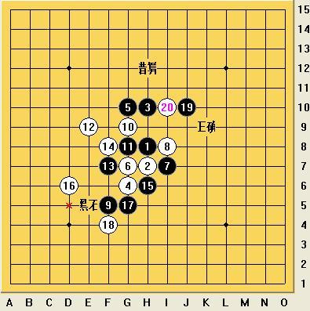
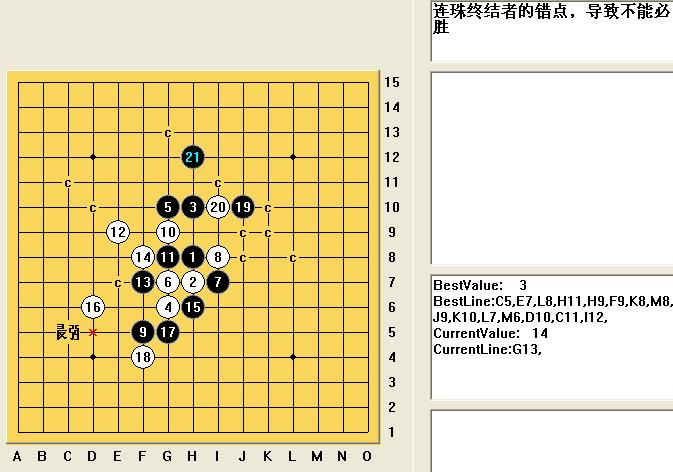
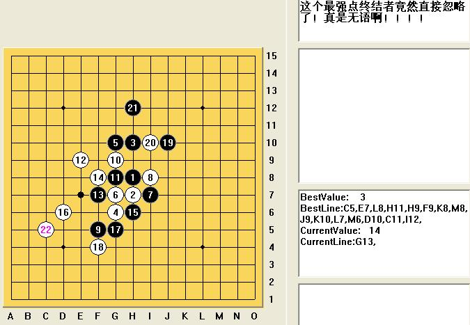
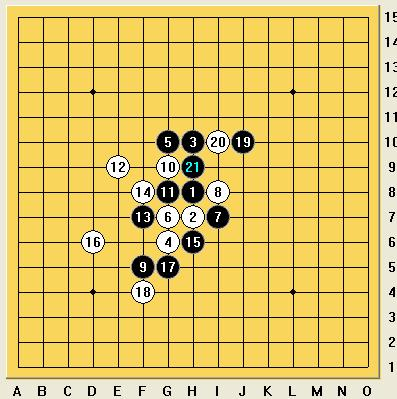
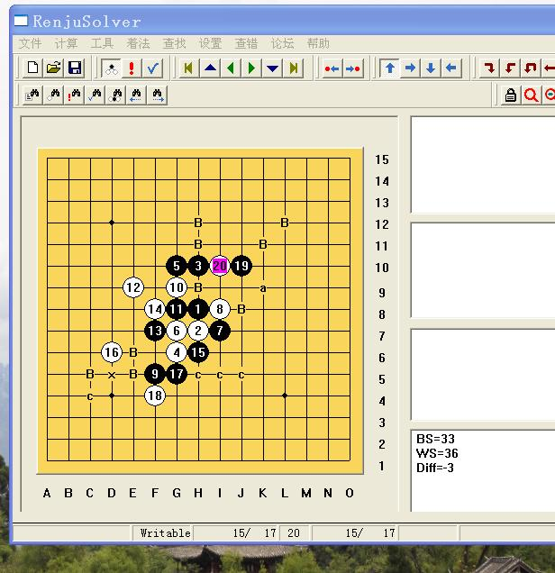
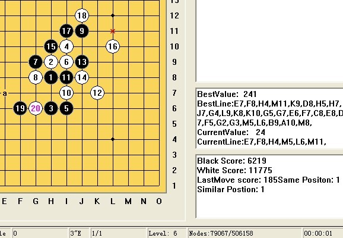

算杀设置问题
#1 算杀设置问题 作者：4 发表时间：2009-2-2 10:32:35
近期不少用户询问如何设置,软件没有误杀.这里做下简要回答.
一, 错杀问题:
软件的缺省设置为了计算速度,所以会出现很多错杀情况.
那么如何设置,软件就很少或没有错杀呢?主要注意以下三点:
1.设置->VCT,防守和攻击着法距离弄到9以上即可.
目前发现这个是主要原因.距离设置9以上后软件基本没有误杀了.
2.设置->对弈时双线算杀,里面的上面两个"局部防守"全部弄钩.
这个是解决对弈算杀时候发生的错杀问题.
3.前两个都设置好后,好有错杀,那么就得试一下修改这个设置,
设置->VCT,"容错搜索"去钩,
这三个设置给予足够重视后,软件基本不会有错杀问题了.
二,漏杀问题:
有很多很简单的杀,软件不会杀,这就是漏杀问题,为了减少漏杀现象,应注意下面几个设置.
1.设置->VCT,"VCF搜索深度" 弄9以上,推荐弄9.
2.设置->VCT,"连续两攻击着法距离",推荐弄9.
3.设置->VCT,攻击点个数,推荐弄30.
4.设置->VCT,序列剪枝,去钩.
5 设置->VCT,最好着法剪枝,去钩.
6 设置->VCT,考虑少数进攻着法,去钩
7 设置->VCT,转移战场剪枝,去钩.
8 设置->VCT,型二空间,相对弄小,例如16
9 设置->VCT,双二空间,相对弄小,例如12.
经过上列设置后,软件就大幅度减少了漏杀的机会,同时计算的速度也相对降低很多.
#2 Re:算杀设置问题 作者：4 发表时间：2009-2-3 23:56:27
堪误:
2.设置->对弈时双线算杀,里面的上面两个"局部防守"全部弄钩.
这个是解决对弈算杀时候发生的错杀问题.
应该是全部去钩.
#3 Re:算杀设置问题 作者：wd1988 发表时间：2009-2-8 10:58:12
终结者经过如上修改仍然存在的一个错算，不知是什么原因？图如下



#4 Re:算杀设置问题 作者：4 发表时间：2009-2-13 17:26:14
不清楚你用的哪个版本,请用新版本(2009版还在测试中),6秒给出答案:
BestValue: 239
BestLine:K9,J8,H12,C5,E7,C11,D10,L8,H11,H9,G13,I11,I9,K10,J9,I12,F12,M8,K8,L9,J11,N7,O6,I13,I14,H14,
#5 Re:算杀设置问题 作者：wd1988 发表时间：2009-2-13 21:30:21
小四，我用的是2008年4月更新的那个版本，设置和你刚才帖子所要求的设置一模一样。但是错算仍然存在，就是我发的那样。希望你能够给我发短信息交流一下。你一看就知道我用的是最新正版了#6 Re:算杀设置问题 作者：wd1988 发表时间：2009-2-13 21:38:01
我下载了2009版，使用缺省设置，竟然更加离谱了！如图：我向天发誓，设置我一点都没动，下下来是什么样就是什么样的！
#7 Re:算杀设置问题 作者：4 发表时间：2009-2-16 13:42:27
咋弄的?
#8 Re:算杀设置问题 作者：4 发表时间：2009-2-16 13:54:41
08年的算40多秒也能整出来呀.#9 Re:算杀设置问题 作者：五林外传 发表时间：2009-2-25 16:33:14
导致错误的原因，有很大程度是个人设置或电脑CPU造成的
#10 Re:算杀设置问题 作者：龙诺棋怪 发表时间：2009-3-5 21:46:47
我也试用了09款，21步也走在了H9,和上面的朋友的一样。我后来自己调了设置，把算杀时间延长，也能走出正解，但不是6秒，是60秒整。不知道怎么才能调得算得又快又准？
#11 Re:算杀设置问题 作者：龙诺棋怪 发表时间：2009-3-5 22:06:24
08款我倒只用了12秒就得到了正解，哈，居然比小四的08款快。#12 Re:算杀设置问题 作者：瑜儿 发表时间：2009-6-7 18:48:16
我的倒是能算出正确的点，不过需要3分36秒，为什么呀？难道是设置有问题？#13 Re:算杀设置问题 作者：wrwak 发表时间：2009-6-7 19:05:15
呵呵 我没买正版的。 论坛里的测试版 按一个下解决必胜 就出来了.
#14 Re:算杀设置问题 作者：极地剑客 发表时间：2009-6-7 19:51:54
楼上好神奇~#15 Re:算杀设置问题 作者：自来水 发表时间：2009-6-7 21:43:42
06版的超强!#16 Re:Re:算杀设置问题 作者：黄药师 发表时间：2009-6-8 20:32:20
引用：还没有用过的人路过一下，下载测试版试试～
原文由 自来水 发表于 2009-6-7 21:43:42 :
06版的超强!

#17 Re:算杀设置问题 作者：自来水 发表时间：2009-6-8 20:40:08
测试版没有用俄……不能保存。
#18 Re:算杀设置问题 作者：wrwak 发表时间：2009-6-9 13:31:41
不能保存是好事，正好自己拆一边 ，还能精简到最小。06测试版实用性很高的。
，还能精简到最小。06测试版实用性很高的。
#19 Re:算杀设置问题 作者：没事摆石子玩 发表时间：2009-6-18 11:49:47
8 设置->VCT,型二空间,相对弄小,例如16
9 设置->VCT,双二空间,相对弄小,例如12.
这2个怎么没看到？
#20 Re:算杀设置问题 作者：sonix 发表时间：2009-6-18 13:26:13
#21 Re:算杀设置问题 作者：黄雪梅 发表时间：2009-6-19 15:44:16
支持#22 Re:算杀设置问题 作者：胡燕军 发表时间：2009-9-7 23:22:15
那个版的终结者算起来最快最准~~

#23 Re:算杀设置问题 作者：杨文浩 发表时间：2009-9-8 17:42:52
计算速度跟你的CPU性能有关啊
#24 Re:算杀设置问题 作者：茗弈妙手 发表时间：2009-11-14 9:40:41
我用非正版06版与正版08版对比使用，居然正版出错率远高……这是为什么……先按前几楼的设置调一调试试……#25 Re:算杀设置问题 作者：不再捣乱 发表时间：2009-11-17 15:54:59
#26 Re:算杀设置问题 作者：战龙在野 发表时间：2009-11-20 12:33:01
3楼的我现在用11秒，配置好可能稍微快一点#27 Re:算杀设置问题 作者：闫荣辉 发表时间：2009-11-20 17:02:44
08用了22秒，09用了8秒，把型2调小，着法距离调到10以上就能行
#28 Re:算杀设置问题 作者：极地剑客 发表时间：2009-11-28 8:10:24
CPU~酷睿双核1.60HZ~内存1G~按小四说的设置后~
08版~32结果37秒得出正解~~V2结果6分钟还未出结果
07版V2结果31得出正解
09版V2~1分37秒出正解~32结果28出正解.
06版12秒出正解.
06版很神奇......
 另外20楼的~最下面栏框的英语怎么设置出来的??
另外20楼的~最下面栏框的英语怎么设置出来的??
你的设置应该很强~1秒出正解~只走到6级就有答案了~
#29 Re:算杀设置问题 作者：极地剑客 发表时间：2009-11-30 19:01:03
设置好了~只要7秒了~#30 Re:算杀设置问题 作者：伍之游 发表时间：2009-12-4 19:38:38
4秒难道你们的机器都比我的慢吗 ~06版
#31 Re:算杀设置问题 作者：极地剑客 发表时间：2009-12-13 6:09:47
2秒了。08.。很无聊，消遣时间。
#32 Re:算杀设置问题 作者：小帮帮 发表时间：2009-12-13 21:13:36
是比较容易出问题，但这一题，我用以前的设置，也能算杀出来，10秒左右吧，07版的
#33 Re:算杀设置问题 作者：遥之来者无界 发表时间：2011-1-25 20:34:32
我去。07版7秒搞定啊#34 Re:算杀设置问题 作者：虚无 发表时间：2011-5-19 17:39:35
21走h12怎么会是错算呢，一样可以杀，怀疑楼主水平。#35 Re:算杀设置问题 作者：絕版賭徒 发表时间：2011-5-19 17:59:31
这好像是在讨论终结者的设置吧,咋扯到水平上去了呢
#36 Re:算杀设置问题 作者：絕版賭徒 发表时间：2011-5-19 18:00:34
17手1秒不到出杀(显示0秒),21手3秒#37 Re:算杀设置问题 作者：虚无 发表时间：2011-5-20 9:16:21
说错了，不是楼主，而是说那说软件错算的人。#38 Re:算杀设置问题 作者：gerbo 发表时间：2011-5-20 17:46:14
 不会设置，人工选点的人路过。。惊叹！！
不会设置，人工选点的人路过。。惊叹！！
#39 Re:算杀设置问题 作者：李珉烁 发表时间：2011-8-9 11:48:58
分数: 248
最好路线:K9,J8,H12,D10,C11,C5,E7,I11,E5,D5,E6,E4,H4,D8,
当前路线:
0秒而已
#40 Re:算杀设置问题 作者：吻火 发表时间：2012-5-13 20:07:32
一直是0秒LEVEL 1
#41 Re:算杀设置问题 作者：草儿要出头 发表时间：2013-5-4 22:21:07
买噶，我用了26秒！
#42 Re:算杀设置问题 作者：草儿要出头 发表时间：2013-5-19 10:56:37
汗。我居然没算出来。你们怎么设置我也一样设置。就是算不出！
#43 Re:算杀设置问题 作者：wrwak 发表时间：2014-4-21 19:52:35
09版 11秒